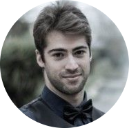

|  |
Guilherme Oliveira34 anos - Brasileiro/Portuguêsoliveira.g.ar@hotmail.com | (31) 99119-4552 I'm an Information Systems student and Music Teacher. I participated in important national music festivals such as, 22nd International Festival of Brazilian Colonial Music and Music, and III Week of Ancient Music of UFMG. During my studies at UFOP I defended the monograph: Paths of a cultural mediator: the poetic-musical discourse in the human tones of José Marín under the guidance of Professor. Dr. Edilson Vicente de Lima. I pursue my career interested in computer subjects. I have a strong interest in technological innovations such as digital games, virtual reality, artificial intelligence, programming language and information technology. Despite focusing my efforts on a career in technology, I still maintain music as a parallel career, being through the practice of classical guitar and baroque guitar as well as research related to historical musicology, cultural history and ancient music. |
| 2020/Out. | Curso de Python3 - Mundo 1 – cursoemvideo.com
Prof. Gustavo Guanabara. |
| 2020/Ago. | Curso de PHP Básico – cursoemvideo.com
Prof. Gustavo Guanabara. |
| 2020/Jun. | Curso de HTML5 – cursoemvideo.com
Prof. Gustavo Guanabara. |
| 2020/Jun. | Curso de Java Básico – cursoemvideo.com
Prof. Gustavo Guanabara. |
| 2020/Jun. | Programming Foundations: Version Control with git – Linkedin Learning |
| 2020/Jun. | Programming Foundations: Databases – Linkedin Learning |
| 2020/Jun. | Estratégias de Ensino à Distância – A Foreducation EdTech |
| 2020/Maio. | Curso de Algoritmo – cursoemvideo.com
Prof. Gustavo Guanabara. |
| 2015/Jul-Ago. | Oficina de Paleografia I – Universidade Nova de Lisboa(UN).
Prof.ª Maria Filomena Borja de Melo. |
| 2013/Set. | Violão|Intercâmbio: masterclass com André Madeira (Portugal). |
| 2013/Abr-Jun. | A História da Musica Ocidental – FEA/ Belo Horizonte, Brasil.
Curso de Historia da Música com o Prof. Daniel Augusto. |
| 2013/Jul. |
Festival de Inverno de Ouro Preto e Mariana – Fórum das Artes.
Oficina “O Piano Preparado de John Cage: Novas Sonoridades e Técnicas”. |
| 2013/Jul. |
Festival de Inverno de Ouro Preto e Mariana – Fórum das Artes.
Palestra “História e Música: Interfaces de Pesquisa”. |
| 2013/Jul. |
Festival de Inverno de Ouro Preto e Mariana – Fórum das Artes.
Palestra “Acervos, Música, Património e Pesquisa”. |
| 2013/Mar. |
Departamento de Música – Universidade Federal de Ouro Preto.
Palestra “A Formação da Musicologia Alemã”. Prof. Dr. Rainer Patriota. |
| 2013/Mar. |
Departamento de Música – Universidade Federal de Ouro Preto.
Palestra “H. J. Koellreuter: Um Panorama de sua Bibliografia”. |
| 2012/Abr. | Violão|Intercâmbio: masterclass com Johan Fostier. |
| 2011/Set. |
III Semana de Música Antiga da UFMG.
Masterclass com o Prof. Hopkinson Smith. |
| 2011/Jul. |
22º Festival Internacional de Musica Colonial Brasileira e
Música Antiga.
Masterclass com o Prof. Luis Leite. |
| 2011/Jun. |
II Festival de Violão da Universidade
Federal de Ouro.
Masterclass com o Prof. Fernando Araujo. |
| 2010/Jul. |
Festival de Inverno de Ouro Preto e Mariana – Fórum
das Artes.
Oficina “UAKTI – Instrumentação e Musicalização”. |
| 2010/Jul. |
Festival de Inverno de Ouro Preto e Mariana – Forum
das Artes.
Masterclass com o Prof. Paulo Bellinati. |
| 2010/Nov. |
Departamento de Música - UFOP
Masterclass com o Prof. Dr. Guilherme Vincens. |
| 2009/Jun. |
V Mostra de Música da UFOP
Oficina “Atuação e Performance” com o percussionista Serginho Silva. |
| Dates | |
|---|---|
| 2015/Jun. | Inglês: fluente. Compreende Bem, Fala Bem, Escreve Bem, Lê Bem. |
| Royal School of Language - Aveiro, Portugal. | |
| 2017/Jan. | ICBEU BH – Belo Horizonte, Brasil. |